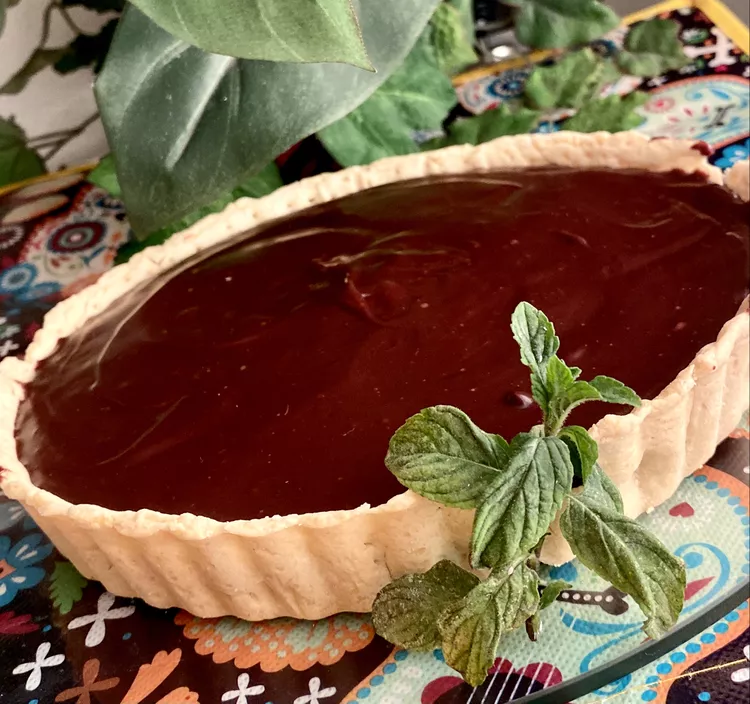

Chocolate Tart

A recipe for the chocolate lovers: the softest, sweetest chocolate tart!
Ingredients
Crust:
- 1 ¼ cups all-purpose flour
- 1 tablespoon white sugar
- ¼ teaspoon salt
- ½ cup cold butter
- 2 teaspoons water
Ganache:
- 1 cup heavy whipping cream
- 2 cups semisweet chocolate chips
Directions
- Combine flour, sugar, and salt in a food processor; pulse to combine. Add cold butter and pulse until crumbly. Slowly add water to food processor until dough comes together. Wrap dough and refrigerate for 1 hour.
- Preheat the oven to 425 degrees F (220 degrees C). Grease an 8-inch tart pan.
- Flour a work surface and a rolling pin; roll out dough into a 10-inch disc.
- Carefully place dough into the prepared tart pan. Trim dough from the edges of the pan. Prick holes in the dough on the bottom and along the sides of the pan.
- Bake in the preheated oven until lightly browned, 20 to 23 minutes. Remove from oven and allow to cool completely, about 1 hour.
- Pour heavy whipping cream into a microwave-safe bowl. Microwave for 2 minutes or until bubbles start to form along outside of the bowl. Add chocolate chips and let sit for 15 to 20 seconds. Whisk until smooth. Pour chocolate ganache into cooled crust. Let cool at room temperature until set, about 30 minutes. Keep refrigerated until ready to serve.